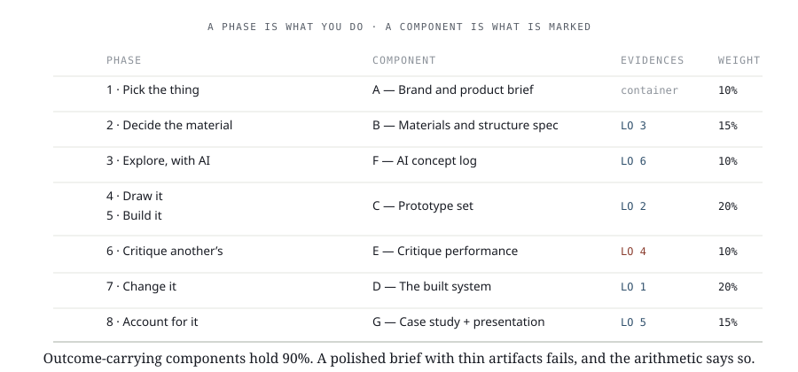

Week 7 · The project starts
The hinge. Six weeks of practice on other people's packaging end, and one project begins. You commit to a product, an audience, and a material — and those commitments are load-bearing: week 9 draws to this week's numbers, week 13 produces against this week's substrate.
The only new variable is attachment. Everything asked of you this week you have already done on somebody else's work.
Course outcomes: LO 1, LO 3.
By the end of this week you can
- Measure a product and state its dimensions in three axes.
- Name an audience so specifically that two design decisions are already forced.
- Specify substrate, caliper and disposal stream for that product, with an alternative rejected.
AssessmentModule summative. Competencies 1 and 3.
To successfully complete Week 7, please do the following:
- ReadThe project starts
- Review15 slides from class
- DoWeek 7 Lab — Proposals and the specification clinic
- SubmitWeek 7 Assignment — Brief and specification
- OpenBrief and specification sheet
- ReviewProvided material — 0.75 h this week. Distributed in class.
- LessonThe project starts
- Slides15 slides from class
- LabWeek 7 Lab — Proposals and the specification clinic
- AssignmentWeek 7 Assignment — Brief and specification
- SheetBrief and specification sheet
Diagrams
From the lesson. Yours to keep — print them, mark them up.

Review before class0.75 h
Material is provided in class. This is on top of the lesson, the lab and the assignment.
Terms are in the Glossary, by module.